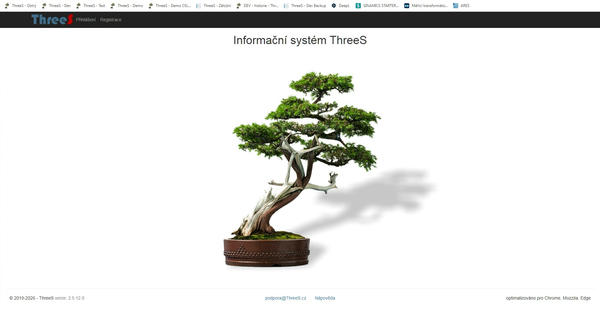

Informační systém ThreeS je koncipován jako modulární webové rozhraní pro správu firemních dat s důrazem na bezpečnost a provázanost informací. Přečtěte si, jak jednotlivé procesy fungují do nejmenšího detailu.
Obdržíte poptávku. Vytvoříte nabídku. Obdržíte objednávku. Na jejím základě založíte zakázku, kterou spárujete s nabídkou i objednávkou. Od teď už všechny vytvářené dokumenty přebírají atributy zakázky.
Vytvoříte harmonogram. Spustíte poptávkové řízení na dodávku komponentů a po jeho vyhodnocení rozešlete objednávky. Máte přehled o dílčím plnění objednávek. Vystavujete dodací listy a protokoly o předání. Evidujete jejich podepsané verze. Fakturujete.
Při všech těchto krocích vidíte okamžitý finanční stav zakázky i termíny. Pokud někde něco drhne, ThreeS vás na to upozorní.
Každá zakázka je nositelem informace Kategorie záznamu. Standardní je kategorie 01, což vyhoví ve většině případů.
Máte-li jiné požadavky, je k dispozici celkem 20 kategorií, které lze nadefinovat podle Vašich představ - odlišné typy dokumentů, procesní postupy... Přístup ke kategoriím lze aplikovat i na uživatele.
Není problém. U každého typu dokumentu lze nastavit, zda může mít varianty, jaké atributy má dědit, které jsou povinné a které ne. Můžete mít připraveno 20 různých typů šablon od každého dokumentu. Samozřejmostí jsou různé jazykové verze, které se přednastavují podle jazyka obchodního partnera.
Dokumenty lze používat jako schvalovatelné vyšší autoritou, anebo neschvalovatelné. Jednotlivá oprávnění lze nastavit podle libosti. Lze zamezit přístupu uživatelů k určitým typům dokumentů anebo k určitým typům informací (finanční, obchodní).
Jste zavaleni příchozími mejly a stále hledáte, kde nebo u koho je nějaký příchozí dopis?
V Příchozí poště se evidují veškeré informace/dokumenty, které nemají původ v ThreeSu. Ať už potvrzení termínu objednávek, přijaté faktury anebo reklamace, vše je evidováno a roztříděno podle zakázek anebo účelu. Uložte si naskenované dokumenty nebo přímo PDF či mejly samotné.
Už nikdy nebudete pátrat, u koho daná informace v písemné podobě vězí.
Taky řešíte zakázkové náklady přijaté až po vystavení vaší faktury?
Tyto praktické problémy, které se týkají téměř všech, co mají "jednoduché účetnictví", řeší ThreeS velmi elegantně a výrazně ulehčí vaší účetní či administrativě život. To, co musí finančnictví znalá osoba pracně provádět na počátku každého roku před podáním daňového přiznání, dokáže proškolený uživatel v ThreeSu na pár kliknutí.
Tuto funkci ocení každý, kdo již měl tu čest s finanční kontrolou a pak nesl její následky.


ThreeS běží na vzdáleném serveru a klade extrémní důraz na zabezpečení vašich dat a informací. Aplikace může být součástí vašeho stávajícího systému, nebo nainstalovaná na pronajatém serveru.